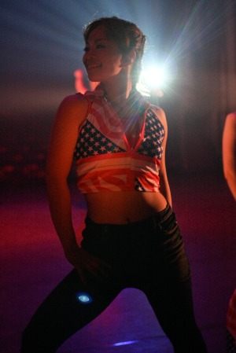

BIOGRAPHY
- 1996.07Earth-Be（アスビー）結成。自然、宇宙、人間などをテーマにダンス作品を創作。
- 1997.12埼玉県ジャズダンス協会主催 第1回ジャズダンスコンクール in 浦和 2位入賞
- 1998.10彩の国県民芸術文化際ジャズダンスフェスティバル in 秩父 教育委員会教育長賞受賞
- 1999.08入間市青少年舞踏合同公演『NEO IRUMANIAN'S DANCE』参加
- 1999.12Earth-Be 第1回公演 『オオタカ伝説』所沢市民文化センターミューズにて
- 2000.10彩の国県民芸術文化際ジャズダンスフェスティバル in 朝霞
- 2001.12Earth-Be 第2回公演 『The LEAF いのちのロンド』所沢市民文化センターミューズにて
- 2002.11the 20th anniversary Bash SUEKO COMPANYに参加
（石橋寿恵子ダンスカンパニー20周年記念公演） - 2005.08Earth-Be 第3回公演 『H2O 地球と水の精霊たちへ』東京芸術劇場中ホールにて
- 2005.12Earth-Be 第4回公演 『オオタカ伝説2005』所沢市民文化センターミューズにて
- 2006.09Earth-Be SPICE企画 vol.1 入間文化創造アトリエAMIGO!にて
- 2009.02Earth-Be 第5回公演 『いそっぷ2009』所沢市民文化センターミューズにて
- 2010.09Earth-Be 第6回公演 『La Terra われわれはどこへ行くのか』
彩の国さいたま芸術劇場大ホールにて - 2011.06Earth-Be SPICE企画 vol.2 『Earth-Be in AMIGO! 2011初夏』
入間文化創造アトリエAMIGO!にて - 2012.06Earth-Be 第7回公演 『La Terra われわれはどこへ行くのか』（再演）
彩の国さいたま芸術劇場大ホールにて - 2012.11the 30th anniversary Bash SUEKO COMPANYに参加
（石橋寿恵子ダンスカンパニー30周年記念公演） - 2014.11Earth-Be 第8回公演 『Memory of Time 記憶をつなぐ 過去から未来へ』
彩の国さいたま芸術劇場小ホールにて
LESSON INFO
- 時間： 毎週月曜日 19:30－21:30（祝日は休み）
- 場所： 飯能市中央公民館 埼玉県飯能市大字飯能 60-1（西武池袋線飯能駅から徒歩15分）
メンバー募集中です。興味のある方は、info@earth-be.comまでお気軽にお問い合わせください。
